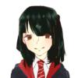
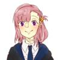
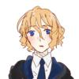
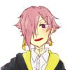
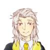
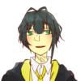

キャラクター説明と背景設定一覧
キャラクター
 夢見 千穂(ユメミ チホ)
主人公±0 グリフィンドール
リンゴにワンプスキャットの毛、16インチ。
得意科目:魔法動物、飼育学
苦手科目:飛行術
基礎能力値 (11歳時点)
STR:7 CON:10 POW:22(12)
DEX:12 APP:18 SIZ:8
INT:18 EDU:5 SAN:0(60)
幸運:60 アイデア:90 知識:25
HP:9 MP:22
ダメージボーナス:+0
状態:
永久的狂気(幻想:同化)、人為的イグの子供化
狂信者の父親と狂信者の母親の間に生まれた。
彼女の産まれた数年後、母親はイグの落とし子を産み落とし死亡した。
見た目は異様なまでに美しく人外じみているが、どこかぼんやりとしている。肩まで伸ばした黒髪に瞳の色は日本人特有の茶色。
妻を孕ませるため召喚なされたイグを見た父親は精神を患い、その後産まれたイグの落とし子を見て「妻から産まれるものはすべからくイグの子供でなければならない」という妄執に囚われ、先に産まれていた「人間」の娘を“イグの子供たち”に近しいものなるよう人体改造を施した。
夢主は、幼い頃に目の前に異形の神が召喚され、母親が孕まされた瞬間死亡、さらに母親の腹から異形の怪物が産まれてその横で父親が発狂、数ヶ月の監禁と魔術的改造を施される…などという数多の精神的負担により、正気度を失った。
その為自分の身の回りや、自身に起きていることは何もおかしいことではない、普通のことなのだと認識するようになる。
またイグの落とし子として生まれた妹に当たる生物は、現在地下の一室で父親と数人の信者が世話をしているが、夢主ちゃんがそばで見ていない限り動くものすべてを襲う。餌は“肉”。
夢主ちゃんは一応その妹を名前で呼ぶが正式な名前はなく、冬に生まれたから「ゆきちゃん」と呼んでいる。
普通の事だし、周りみんなが自分の妹や自身のことを知ったら正気じゃなくなることは理解できないが、それを除くと普通の女の子。
 アイラ・シャフィク
主人公-1 レイブンクロー
スギの木にディリコールの尾羽根、7.8インチ
得意科目:薬草学、飛行術
苦手科目:魔法史
ノエルの妹でルーナが好き。
本人曰く「アガペーの恋だから、恋愛感情とかそういうのじゃない」らしい。
でも兄にルーナは任せられないとは思ってる。
ルーナとはコンパートメントで仲良くなった。ジニーとも仲がいい
 オットマー・フーベルトゥス
主人公-1 レイブンクロー
ブナの木に不死鳥の尾の羽根、11.8インチ
得意科目:薬草学
苦手科目:闇の魔術に対する防衛術
ドイツ系混血の魔法族。
たまたまアイラと仲良くなったがためにアイラに振り回される不憫枠。
気が弱くうまく会話ができないのを除けば成績優秀な魔法使い。
得意科目が一緒ということもありネビルとも仲がいい。
 ノエル・シャフィク
主人公+2 ハッフルパフ
ハナミズキにピクシーの骨、12.4インチ
得意科目:魔法薬学
苦手科目:飛行術
聖28一族に名を連ねる名家の出身。
ルーナラブグットに片思いをするも、本人を前にすると照れからか、酷い言葉ばかりを投げかけてしまう。
妹であり恋敵でもあるアイラとは犬猿の仲。
しかし趣味趣向は似ている様子。

ギディオン・テイラー 主人公+2 ハッフルパフ 得意科目:魔法史
ナシの木にオーグリーの翼の羽根、8.8インチ
苦手科目:変身術
マグル生まれ。
実家が代々続く仕立て屋を営んでいるため、服には人一倍気を使う。
体格が良く、黙っていると怖がられる顔つきであるが、話し始めると柔和な笑みと優しい言葉遣いもあり女子に人気。
ノエル、オリヴァーの友人。
 オリヴァー・ワトソン
主人公+2 ハッフルパフ
セコイアにイーソナンの鬣、13.7インチ
得意科目:オールマイティにこなす
苦手科目:魔法薬学
両親がスクイブで、互いが魔法族だと知ったのがオリヴァーの入学証明書が届いた時という天然両親の間に生まれた。
両親がかなりの天然なために結構なしっかり者。下に双子の妹がおり面倒見もいい。
ノエル、ギディオンの友人。
世界観
クトゥルフと魔法界のクロスオーバー。キャラによってクトゥルフ度合いは変わる。
多分千穂＞まる＞＞アイラ、オットマー＞＞＞ノエル、ギディオン、オリヴァーだと思うが千穂がトップなのは確か(本人が神話生物なので)
まるや千穂の両親はマグルであるにもかかわらず、魔術師としての肩書を持つ。
ここで疑問になるのが『魔法使い(魔女)』と『魔術師』の違いについてである。
これについて法や規定などが設けられているわけではないが、多くの本で以下のように述べられている。
【生まれつき魔法の力(魔力)を有しており、時には呪文や特定の道具を使わずに、例えるなら感情の噴出などで意図せず魔法が発動してしまうようなものたちを『魔法族(あるいは魔法使いや魔女)』と呼び、魔法族に分類される者たちが使う術のことを『魔法』という。
一方、体力や精神力その他肉体的犠牲を払ったり、宇宙的神性などと魔術契約を行うことで術を発動する者たちを『魔術師』と呼び、彼らが使う術のことを『魔術』と呼ぶ
この２つの決定的違いは『魔術』は魔法族も使用できるが『魔法』は魔法族しか使用できないという点である。
実際に魔術と呼ばれる学問は魔法界にいくつも存在している。
しかし、実際にマグルである者が使用できるような呪文や詠唱はほとんど存在しない。
彼らが主に使用する『魔術』は、魔法族にとって禁書に近い扱いのものばかりでコストが高く、呆れてしまうほど非効率なものばかりである。
そのため、魔法族でありながらも魔術を学び、わざわざ使おうとするものは邪教に染まった狂信者くらいだ。】
…とまあそれっぽく書きはしたものの、メタ的に言うと魔法はヒト科の生物が生み出したものだが、魔術は外宇宙から持ち込まれたものである。
つまりは厳密にいうと『魔法に分類されない全く別次元で構築された一つの技術』である(とこの創作内では定義しているよって話)。
科学とかみたいに原理を知らないと「なんでこうなるの！？」みたいに思うような分野的技術の１つなので、魔法族的には『非常に非効率的でコストがかかる』が、マグルから見たら『奇跡の業』である。
あとこの世界では書いてる人間が設定厨であるために捏造がわんさか出てくる(特に夢主が使うルーンとか魔法円とか杖の呪文とか)。
ついでに書いておくと本作では「マホウトコロ」は90年代に入るまで、ダームストラング同様純血の魔法使い(日本では杖術が普及し出したのが80年代ごろからであり、それ以前の古来魔法を使う者たちは陰陽師、或いは術者と呼ばれる)しか入学できなかったという設定がある。
原作時以降のマホウトコロは非魔法族出身者及び混血がほとんどを占めている。